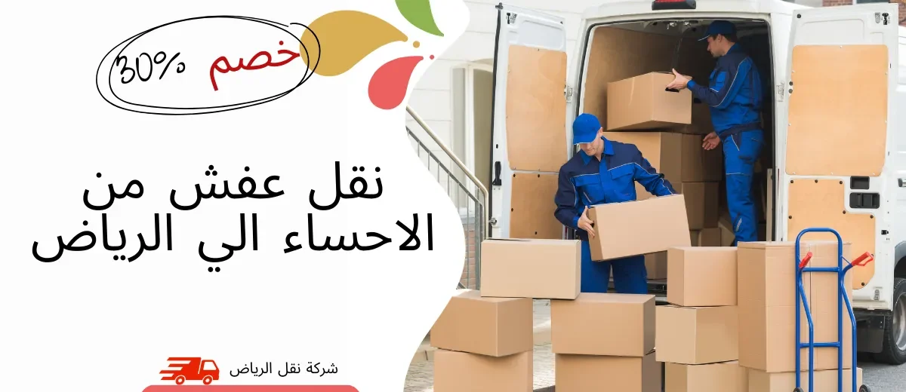

نقل عفش من الاحساء الي الرياض 0559865517 بأفضل سعر

مع تزايد انتقال العائلات والأفراد بين منطقة الاحساء والرياض سواء كان النقل بغرض الدراسة أو العمل تُعتبر خدمة نقل عفش من الاحساء الي الرياض من الخدمات المهمة التي يزداد عليها الطلب في هذه الفترة، تحتاج عملية نقل العفش إلى تخطيط مسبق واختيار شركة موثوقة تمتلك خبرة عالية في هذا المجال تضمن لك نقل عفش بأمان، من ضمن شركات نقل عفش من الاحساء الي الرياض الموثوقة “شركة نقل الرياض” التي تمتلك خبرة كبيرة في التعامل مع الأثاث بأنواعه، كما أنها توفر مجموعة من السيارات المجهزة لنقل عفشك دون أن يحدث به أي خدوش أو صدمات، يُمكنك الحصول على خدمة نقل عفش من الاحساء الي الرياض بسهولة من خلال التواصل مع شركة نقل الرياض بالضغط على ايقونة الواتس اب.
خطوات نقل عفش من الاحساء الي الرياض
- التخطيط المسبق وتحديد موعد مناسب للنقل
يبدأ الأمر بالاتفاق على وقت محدد يتناسب مع جدول العميل ويتيح للشركة تجهيز كل المستلزمات مسبقًا. - تقدير حجم الأثاث بدقة
يتم حصر القطع المراد نقلها لتحديد حجم السيارة المطلوبة وعدد الفنيين، مما يسهل سير العملية بسلاسة. - إعداد خطة للنقل الطويل
نظرًا لبعد المسافة بين الأحساء والرياض، يتم وضع خطة لجدول الرحلة تتضمن فترات التوقف اللازمة لضمان سلامة الأثاث. - حماية الأغراض الثمينة
الأغراض الحساسة مثل الأجهزة الكهربائية أو المقتنيات الزجاجية تُعطى عناية خاصة بتغليف مزدوج أو صناديق مخصصة. - تنظيم الأثاث داخل المركبة
يتم ترتيب العفش بطريقة مدروسة داخل السيارة بحيث توضع القطع الثقيلة في الأسفل والخفيفة في الأعلى لتفادي التلف. - تأكيد الاستلام عند الوصول
بعد الوصول إلى الرياض، يقوم الفريق بتسليم الأثاث للعميل وفق القائمة المتفق عليها والتأكد من أن جميع القطع وصلت بحالة سليمة.
مميزات شركات نقل عفش من الاحساء الي الرياض
من المهم اختيار شركات نقل عفش من الاحساء للرياض موثوقة وتمتلك العديد من المميزات من ضمن هذه الشركات هي شركة نقل الرياض، إليك أبرز مميزات الشركة:
- يجب أن تكون لدى الشركة الخبرة العالية في مجال نقل العفش، امتلاكها لفنيين مدربين على أعلى مستوى على خدمات مثل الفك والتركيب.
- يجب أن تكون الشركة تستخدم أدوات تغليف عالية الجودة ومواد قوية لحماية الأثاث من الصدمات.
- امتلاك الشركة سيارات نقل مغطّاة ومحكمة التثبيت، مع إمكانية استخدام أوناش أو رافعات عند الضرورة لحماية الأثاث من التلف خلال التحميل أو التنزيل.
- يجب أن تقدم الشركة خدمات متكاملة مثل الفك و التفريغ والتحميل والتركيب في المكان الجديد.
- من أهم مميزات شركة نقل الرياض هي أن تكون الشركة تلتزم بمواعيد النقل، لمنع أي تناقض في مواعيد الاستلام والتسليم.
- توفر خدمة عملاء على مدار 24 ساعة للرد على استفسارات العملاء في جميع الأوقات.
كيف تختار افضل شركة نقل عفش من الاحساء الي الرياض
أولًا: يجب اختيار شركة تمتلك خبرة في نقل عفش من الاحساء الي الرياض، لضمان تغليف الأثاث بطريقة مضمونة، تجهيز السيارة بطريقة تتناسب مع الطرق.
ثانيًا: التأكد من أن الشركة تمتلك سيارات مجهزة ومزود بأدوات لتثبيت العفش، كما يجب التأكد من وجود سيارات مغلقة لحماية العفش من العوامل الخارجية.
ثالثًا: اختيار شركة نقل عفش من الاحساء الي الرياض تقدم خدمات متكاملة مثل الفك والتركيب والتغليف، النقل والتحميل، بالإضافة إلى خدمة التخزين المؤقت.
رابعًا: التأكد من أن الشركة تقدم ضمان على العفش في حالة حدوث أي تلفيات، وجود سياسة للتعويض في حالة حدوث أي خدوش.
خامسًا: الاطلاع على تجربة العملاء السابقين، سمعة وتقييمات الشركة من ناحية الالتزام بالمواعيد والأسعار الشفافة والواضحة.
اسعار وخدمات نقل العفش من الاحساء الي الرياض
لا يُمكن تحديد سعر ثابت لخدمة نقل عفش من الاحساء الي الرياض وذلك لأن الأسعار تختلف وفقًا لعدة عوامل مثل الخدمات المطلوبة، عدد قطع العفش، المسافة بين المكان القديم والجديد، لذلك يجب أولًا تحديد كافة المعلومات والتحدث مع الشركة للحصول على أسعار واضحة.
أما بالنسبة لخدمات نقل العفش من الاحساء للرياض، فهي تشمل:
- معاينة العفش قبل النقل لتحديد حجم الأثاث وكمية العمالة اللازمة.
- فك وتركيب الأثاث، خصوصًا القطع الكبيرة أو المعقدة.
- التغليف باستخدام مواد عالية الجودة مثل الكراتين المقواة، الفقاعات، ومواد عازلة للخدوش والرطوبة.
- النقل بسيارات مجهَّزة مناسبة للمسافات الطويلة.
- تثبيت العفش داخل المركبة لتقليل الصدمات والاهتزاز أثناء الطريق.
- تفريغ وتركيب الأثاث في المكان الجديد بالرياض.
- تأمين أو ضمان على العفش ضد التلف أو الخدوش المحتملة.
- خدمات إضافية مثل استخدام ونش للأدوار العليا، أو التخزين المؤقت إذا كان المكان وجهة النقل غير جاهز.
كيفية طلب خدمة نقل عفش من الاحساء الي الرياض
طلب خدمة نقل عفش من الاحساء الي الرياض أصبح اليوم أسهل من السابق بفضل اعتماد شركات نقلالعفش على وسائل تواصل متطورة، في البداية، يقوم العميل بالتواصل مع الشركة عبر الهاتف أو الواتساب أو الموقع الإلكتروني لتقديم طلب الخدمة، ثم يحدد موعدًا لمعاينة العفش أو يرسل تفاصيل دقيقة عن حجم الأثاث ومكان التحميل والتسليم، بعد ذلك، يحصل على عرض سعر يتضمن جميع التفاصيل والخدمات المطلوبة مثل الفك، التغليف، والنقل، عند الاتفاق، يتم تحديد موعد التنفيذ وتخصيص فريق عمل مع مركبة مجهزة، مما يضمن تجربة نقل سلسة وآمنة بين المدينتين، من الشركات التي توفر أسهل وسائل التواصل هي شركة نقل الرياض، حيث يُمكنك التواصل معها فقط بالضغط على أيقونة الواتس اب الظاهرة أمامك على الشاشة.
نصائح لضمان سلامة الاثاث عند نقل عفش من الاحساء للرياض
لضمان أن عملية نقل عفش من الاحساء للرياض تتم بشكل صحيح يجب عليك اتباع بعض النصائح لضمان أن العملية تتم بأمان كامل، إليك أهم هذه النصائح:
- التغليف الجيد: استخدم كراتين مقواة ومواد عازلة مثل الفقاعات الهوائية لتغطية الزجاج والأثاث الحساس.
- ترتيب الأثاث داخل الشاحنة: ضع القطع الثقيلة في الأسفل والخفيفة في الأعلى لتجنب الكسر أو الضغط.
- فك الأثاث الكبير: مثل الأسرة والخزائن، فهذا يقلل من احتمالية التلف أثناء التحميل والتنزيل.
- تحديد مسار النقل مسبقًا: الاتفاق مع الشركة على الطريق الأنسب لتقليل مدة الرحلة وحماية العفش من الاهتزاز الزائد.
- الاستعانة بشركة متخصصة: وجود فريق مدرّب يضمن التعامل باحترافية مع الأثاث الثمين أو الأجهزة الكهربائية.
- التأمين على العفش: اختيار شركة تقدم ضمانًا أو تأمينًا يوفّر لك راحة البال في حالة حدوث أي طارئ مثل شركة نقل الرياض أفضل شركات نقل عفش من الاحساء الي الرياض.
في الختام، إن اختيار شركة لنقل عفش من الاحساء الي الرياض هي خطوة ضرورية تحتاج إلى تخطيط دقيق، وذلك لأن اختيار شركة موثوقة توفر لك الأمان والسرعة والحفاظ على سلامة ممتلكاتك من أي خدوش أو صدمات قد تحدث أثناء عملية النقل، من أفضل شركات نقل عفش من الاحساء للرياض هي شركة نقل الرياض التي تمتلك خبرة عالية في نقل العفش، كماأنها تمتلك فنيين مدربين على أعلى مستوى على خدمات فك وتركيب الأثاث بطريقة وأسلوب إحترافي، بالغضافة إلى ذلك فإن شركة نقل الرياض تلتزم التزام كامل بالمواعيد لعدم تعارض مواعيد النقل مع بعضها، يُمكنك التواصل مع شركة لطلب خدمة نقل عفش من الاحساء الي الرياض من خلال الضغط على أيقونة الواتس اب.
الاسئلة الشائعة عن نقل عفش من الاحساء الي الرياض
كم يستغرق وقت نقل عفش من الاحساء الي الرياض؟
تختلف المدة حسب حجم العفش وظروف الطريق، ولكن في المتوسط قد تستغرق من 4 إلى 6 ساعات.
هل توفر شركات نقل العفش تغليفًا للأثاث؟
نعم، الشركات المحترفة مثل شركة نقل الرياض توفر تغليفًا للأثاث باستخدام أجود وأقوى أنواع التغليف للحفاظ على أثاثك وضمان وصوله بأمان.
هل يمكن طلب خدمة النقل في أي وقت؟
نعم، وذلك لأن شركة نقل الرياض لديها خدمة عملاء ترد على استفسارات العملاء على مدار 24 ساعة.